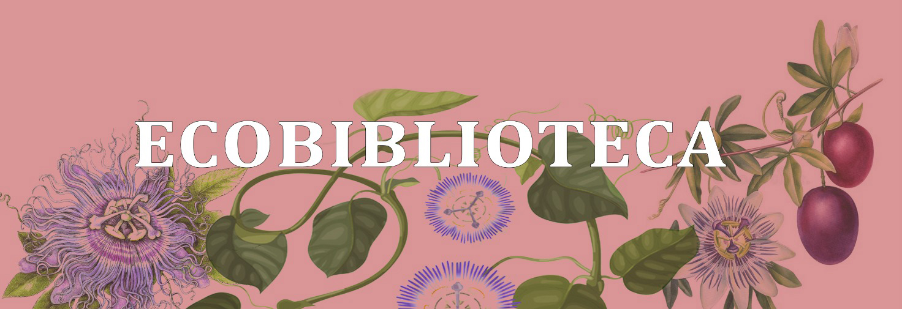

ECOBIBLIOTECA
Projeto de extensão cujo objetivo é estabelecer, através do espaço físico da Ecobiblioteca no Centro Cultural da UFMG, uma ponte entre a Universidade e a comunidade externa, com trocas de saberes, no que tange à relação entre natureza e cidade. Como o grupo de estudos está ligado à Faculdade de Letras, as questões partem da literatura, mas sempre em diálogo com outras disciplinas do conhecimento e saberes populares.
A ECOBIBLIOTECA conta com um acervo de livros relacionados à natureza e à ecologia para consulta da população e também oferece cursos gratuitos e abertos à comunidade, em parceria com professores da rede pública da educação básica e/ou com outros cidadãos.
ATENÇÃO: A Ecobiblioteca está agora na Av. Pres. Antônio Carlos, 6627, sala 2025 da Faculdade de Letras (UFMG), Pampulha, Belo Horizonte. Estamos abertos de segunda à sexta, das 9h às 13h e das 14h às 18h.
O Projeto
A proposta de criação de um acervo dedicado inteiramente à questão ecológica, incluindo obras literárias e artísticas, relatos de viajantes e textos críticos e teóricos, surgiu a partir das discussões realizadas no âmbito do Grupo de Estudos “Natureza, Violência e Ecocrítica” (NAVE), da Faculdade de Letras da UFMG. O grupo, composto atualmente por dezenove pós-graduandos, uma graduanda e duas docentes, foi formado em 2020 e, desde então, desenvolve encontros quinzenais, nos quais são analisados textos voltados, principalmente, para a ecocrítica, com ênfase na perspectiva transdisciplinar que caracteriza essa linha teórica. Os estudos realizados pelo grupo NAVE têm confirmado a urgência e importância da reflexão em torno da ecologia tanto no âmbito acadêmico quanto fora dele. Em um momento em que se intensificam os ataques contra ecossistemas imprescindíveis como o Cerrado, a Amazônia, a Mata Atlântica e o Pantanal, cuja devastação intensifica de forma direta a crise climática planetária, torna-se premente a difusão dos estudos ecocríticos para a comunidade externa, em particular, para os/as estudantes das escolas das redes municipal e estadual de ensino. Por outro lado, consideram-se essenciais o desenvolvimento e a intensificação de diálogos entre a academia e comunidades de povos tradicionais, que já têm uma ampla experiência e conhecimento acerca da questão ambiental.
Nesse sentido, a proposta deste projeto é criar um acervo voltado inteiramente para a discussão ecológica e para a representação da natureza na literatura e nas artes, que fique à disposição da comunidade acadêmica da UFMG, assim como da comunidade externa. Além disso, pretende-se que este seja não um espaço tradicional de biblioteca silenciosa voltada para a leitura individual, mas um polo de estudos, debates, leituras e aprendizagem. A localização estratégica da Ecobiblioteca no Centro Cultural da UFMG irá propiciar a interação com habitantes e passantes de um território que congrega parte significativa da grande diversidade populacional da capital mineira. Esse entorno permitirá o desenvolvimento de atividades diversas, tais como: rodas de leituras, oficinas de contação de histórias, oficinas de escrita criativa, cursos e mini-cursos de fotografia de natureza, ilustração científica, encadernação, produção de podcasts, mostras de cinema, além dos encontros regulares do grupo NAVE e seminários organizados também pelo grupo.
O projeto da Ecobiblioteca pretende, ainda, estreitar parcerias com o Acervo de Livros Indígenas da UFMG, localizado na Biblioteca Central do campus Pampulha da UFMG, no sentido de propiciar o acesso a obras produzidas por povos tradicionais e, até mesmo, estabelecer diálogos e parcerias com povos indígenas que participam da Formação Intercultural para Educadores Indígenas, o FIEI, da UFMG.
Parte-se, portanto, de uma noção de biblioteca aberta, inclusiva e participativa, nos moldes do que propõe pesquisadores como Marilena Nakano,[1] e também de uma compreensão de leitura compartilhada, geradora de debates e reflexões. Assim sendo, o projeto tem como expectativa formar, organizar e difundir um acervo interdisciplinar voltado para o tema ecológico, e, ao mesmo tempo, construir em torno dele interações dialógicas entre a comunidade acadêmica e segmentos da comunidade externa, que contribuam para a educação ambiental dos estudantes do projeto e do público alvo e possibilitem a ampliação e aprofundamento de reflexões sobre a ecocrítica, econarrativas, land art e ecologia de modo geral.